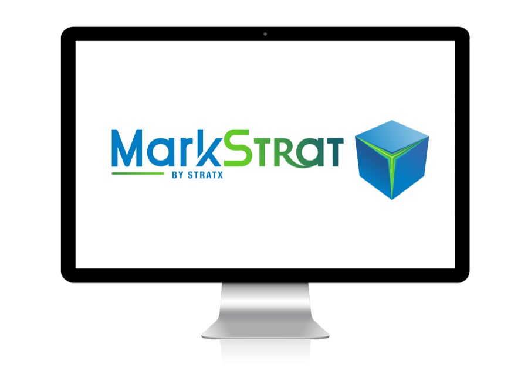

Circular Markstrat Business Simulation Certificate of completion, LUISS Business School. Strategic simulation in an eco-sensitive market with competitive decisions, circular economy initiatives and eco-conscious consumer targeting.Selected Work / Marketing Strategy
Marketing Strategy & Business Simulation
Academic and simulation-based work focused on marketing strategy, business analysis and strategic decision-making. Through market analysis, segmentation and innovation thinking, the project developed solutions that create value and promote sustainable business outcomes.
Circular Markstrat Business Simulation
A strategic business simulation in which participants manage a company in an eco-sensitive market. The challenge involved marketing strategy, innovation, research and development, eco-friendly product design, circular economy initiatives and targeting eco-conscious consumer segments under realistic competitive pressure.
Marketing Strategy
Business Simulation
Segmentation
Innovation
Circular Economy
Back to selected work
MSG Studio — Events, Brand Activation & Client Experience
During my internship at MSG Studio Srl, I supported the operational and communication activities behind large-scale trade fairs and corporate events. I collaborated on projects connected to Vinitaly, Rimini Wellness, Salone Nautico, Pharmintech and Autopromotec, gaining direct exposure to how brands engage audiences in dynamic, high-traffic environments.
My responsibilities included supporting event preparation, assisting exhibitors and visitors, coordinating on-site activities and contributing to a consistent brand and customer experience. This experience strengthened my ability to work under pressure, communicate with diverse stakeholders and translate organizational planning into effective public-facing execution.
Key Areas
Event Marketing
Brand Activation
Client Communication
On-site Coordination
Customer Experience
Teamwork
What the simulation developed
Strategic Decision-Making
Market Analysis
Product Positioning
Eco-Conscious Innovation
Competitive Analysis
Teamwork & Collaboration
Performance Tracking
Business Experimentation
Marketing Focus Areas
Market Analysis
Consumer Insights
Strategic Planning
Business Development
Communication & Positioning
Event Marketing
Brand Activation
Sustainability-Oriented Strategy
Key Skills
Marketing Strategy
Market Analysis
Consumer Insights
Business Simulation
Event Marketing
Strategic Thinking
Team Collaboration